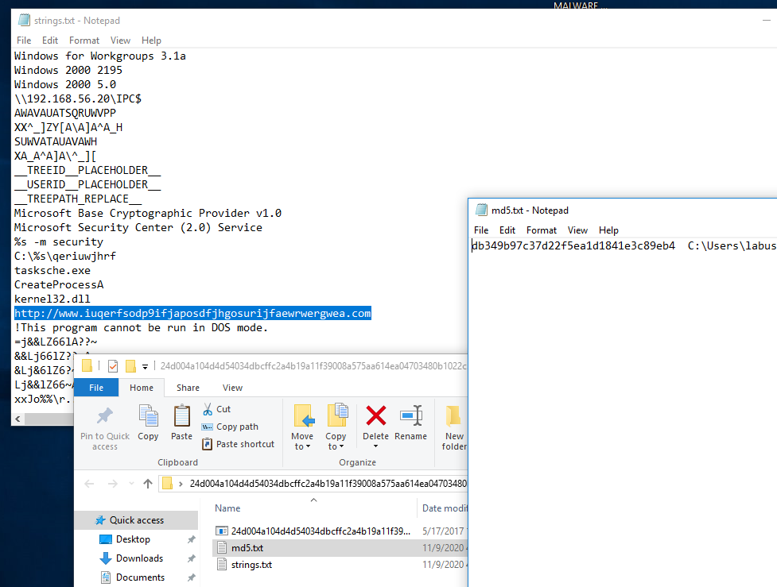
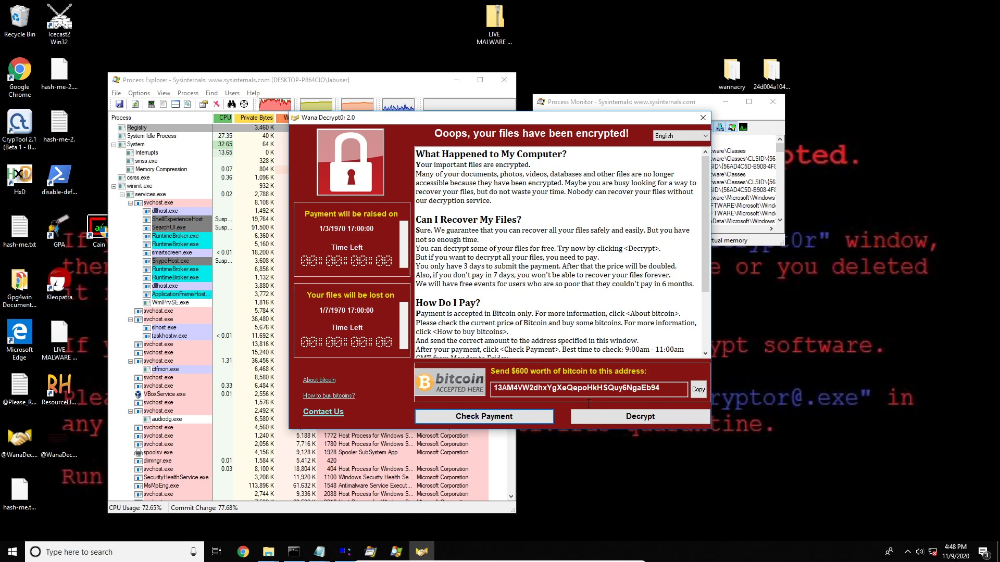

WannaCry
Static and Dynamic Analysis

Basics and Concepts
WannaCry broke previous malware records, due to the world-wide coverage. Like Pitbull, everyone was watching.
On May 12th 2017, WannaCry exploited a vulnerability in a protocol of Microsoft’s Operating System. Nearly 200,000 computers in 150 countries found that their files were encrypted and must pay $300 to recover them. One of the most affected users were within the British National Health Service (NHS) which rendered their systems useless, postponing medical appointments for weeks, with only emergencies the only service provided by the thousands of hospitals under the NHS.
Three Major Components
- Worm: does not require a primary host which allows it to spread autonomously
- Took advantage of the SMBv1 protocol
- Patched by Microsoft 2 months prior MS17-010 Critical
- Released by the Shadow Brokers who released many other vulnerabilities in common software from the NSA
- Kill Switch: Single line of code that dictates behavior
- Checks to see if the domain is registered
- If live, stops spread and encryption on host computer
- Otherwise, encrypts everything and sends to random IP addresses on the network
- Ransomware: User must pay to remove malware
- Must pay $300 to recover the files
- Users reported that paying the ransom did not resolve the issue (Twitter)
Technical
WannaCry is not a polymorphic worm, in that, the primary executable (malware) does not change over time, nor was designed to. It’s MD5 hash was the same across the world, however many copy-cats (enthusiast) hackers over the last decade have attempted to recreate this world-wide spread by modifying the Kill-Switch which inadvertently modifies the MD5 sum of the malware. Sophos Labs reported another 10 versions have been released to the public compared the original version.
The Server Message Block v1 protocol was vulnerable to the EternalBlue exploit that allows remote execution of arbitrary code on Windows systems. Computers who do not have this security patch are still vulnerable if they were shared this file directly over the network. Once this exploit gains access to the network, floods it with spoofed packets from Microsoft to reach the target machine. This allows attackers to compromised the entire local network and all devices connected to it. Shodan reported that in 2019 there are around 400,000 windows systems with the SMBv1 protocol still active and online. Now some of these may be honeypots, purposefully online to attract attackers to learn more about them, however the only prevention they have are anti-malware software (hopefully).
The final portion of this attack is through a raw shell code payload, DoublePulsar, a memory based kernel that hooks onto x86 and 64-bit systems that allows hackers to execute commands directly on the host computer. It can respond to a single ping request (see if the domain is active), uninstall itself, load shell code, and/or run a DLL on the host. This powerful exploit only resides in the RAM which is a two pronged attack, for the user can restart the computer and the malware is gone. However, random access memory is extremely fast (less than 1ms) to execute all commands.
Now for the fun…
I wanted to re-live this experience on my own computer, but in a contained, sandbox environment with VirtualBox and NO internet connection. So, I performed a static and dynamic analysis of this malware on the computer in a contained environment.
Tutorial I followed.
Set-up
- Import Virtual Machine: Win 10 w/ SMB v1
- NAT Network (EthicalHacking)
- Turning off adapter within environment before execution
- It CAN spread if other machines on the network are not patched, and has access to the network
- Snapshot the box prior to each step for redundant backups
- Finally, disabling Windows Defender
Static Analysis
During the static analysis (before execution) which allows the analyst to pull information from the malware without running it.
- Strings Program
- MD5 checksum
- Kill switch domain
- Packing information of executable
- Resource Hacker
- FileVersion: 1.0
- Ownership: Shado Brokers
- Save the /bin as an executable
- Dependency Walker
- Dynamic Linked Libraries included in packing info and use in a malware sample
- BCRYPT.DLL: in house encryption for windows and re-used by WannaCry

Dynamic Analysis
- Process Monitor
- An advanced monitoring tool for Windows that shows real-time file system, Registry and process/thread activity. It combines the features of two legacy Sysinternals utilities, Filemon and Regmon, and adds an extensive list of enhancements including rich and non-destructive filtering, comprehensive event properties such as session IDs and user names, reliable process information, full thread stacks with integrated symbol support for each operation, simultaneous logging to a file, and much more. Its uniquely powerful features will make Process Monitor a core utility in your system troubleshooting and malware hunting toolkit.
- Process Explorer
- The unique capabilities of Process Explorer make it useful for tracking down DLL-version problems or handle leaks, and provide insight into the way Windows and applications work.
